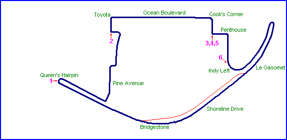
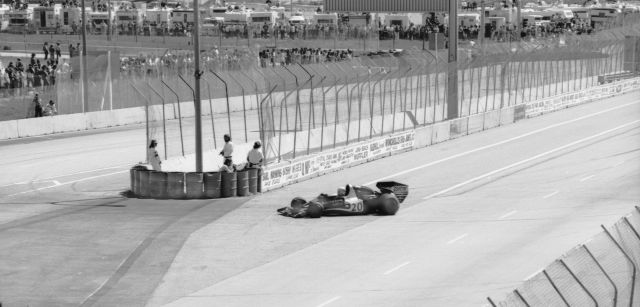
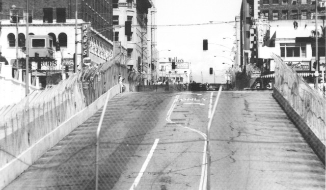
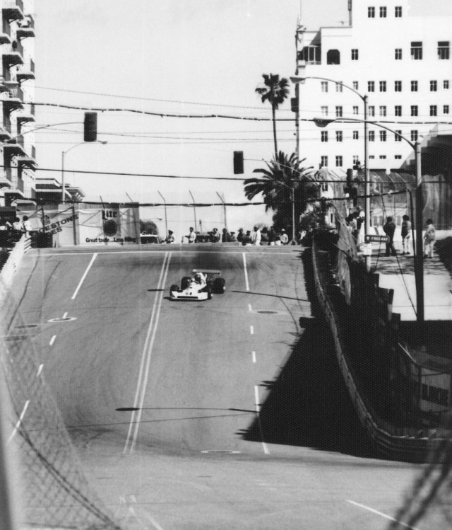
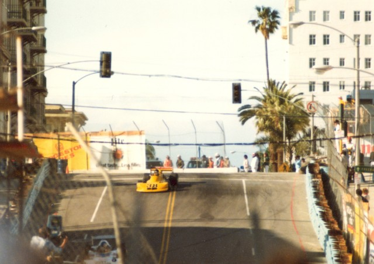
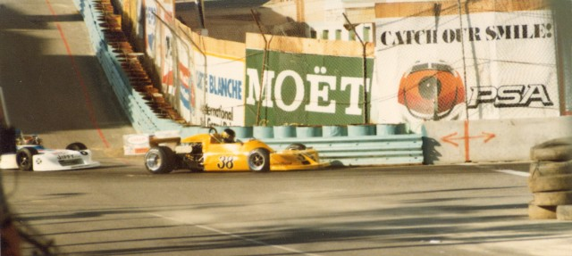
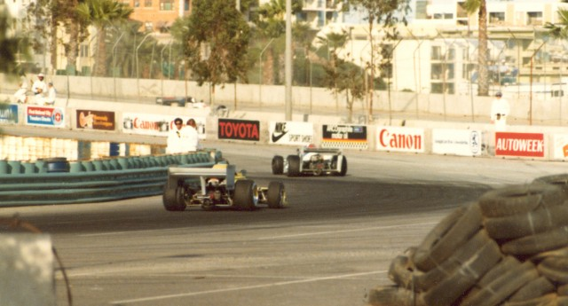

Long Beach, California, United States
Type: Street Circuit
Used: 1975+
Photographs Taken: 1-2 April, 1978
Designed by former Formula 1 driver Dan Gurney, the circuit uses the city streets along the seafront of Long Beach in southern California. Organised by Chris Pook, the first Grand Prix of Long Beach was held for Formula 5000 in 1975. This was followed the year after with a round of the Formula 1 world championship, the US Grand Prix West. The race transfered to the CART series from 1984. The circuit has seen many configuration changes over the years as certain sections were bypassed or diverted because of new developments within the city.
Numbers on the map indicate where the pictures were taken. See below to
view the photographs.

Return to racingcircuits.net's Photo Archive Main Index

Jody Scheckter's Wolf-Cosworth entering the Queen's Hairpin.

Looking up the hill at Toyota Corner

Cook's Corner

Cook's Corner.

Tom Gloy's #38 March 77B negotiating the left hander following Cooks corner. He would
eventually finish the Formula Atlantic race in 2nd postion

The Indy Left
Photographs ©Fred Young. Reproduced here with kind permission.